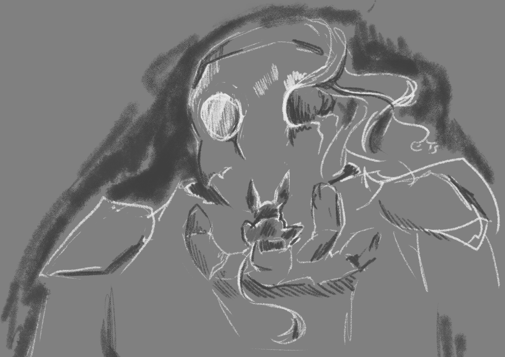

The tiny little jerboa stretched his long legs and rolled around in his sandy bed. It had been quite a long time since he was able to sleep so soundly. Being so small, it had been quite a long time since he was able to sleep so soundly, but it was a few nights ago, after being chased by quite a fearsome beast in the sky, he found a small little safe haven. Plants growing from this strange figure, which attract the bugs he loves to eat. A small pond, which while he doesn’t need exactly, lets him cool off during the burning midday sun. Most importantly, a small cavern in which he had been able to make a nest, safe from any and all predators that would normally turn him into a little snack. The jerboa, unsure of what exactly he had been nesting, felt obligated to help dig out his little safe haven. With a steady supply of food, he was able to spend the cool mornings and nights digging out this strange figure he nests in. Much to his delight, he finds many a shiny trinket in the dust and dirt. Around six nights after encountering his safe haven, he heard an abysmal sound. Loud, sharp and hideous. The jerboa immediately went to hide in his little nest but before he could make it there, he found his perspective rising. Something, someone had lifted him. It was the thing he had been hiding in for the last week or so. Now, face to face, he realized it had a face. A literally broken one, but now it was aware, staring directly at him. He made himself small, realizing that if this was a predator, it was likely his end. A high pitched sound emitted from the beast, then a lower one, and finally one the jerboa could understand. “Why do you linger?” is what it asked. The jerboa, having no way to talk back, simply twitched its ear. “Do you know what I am?” it continued, “I do not know where I came from, or what I am, but I know I brought destruction.” The jerboa sniffed the hand that held it. Destruction? Maybe once, but right now, all he cared about was the fact that he was able to sleep at night without waking up at every sound. He had a steady supply of food, so the little jerboa never felt hungry. He had no way to tell the creature that spoke to him now, not with the words it spoke, at least. But at the very least, he hopped onto its shoulder and gave it a simple nuzzle.
 Contact About